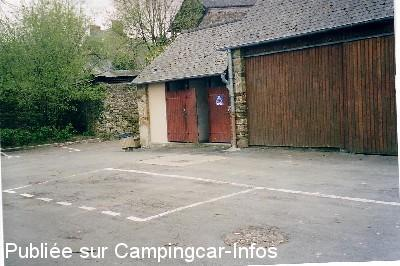

AC = Camping acceptant les camping-cars de :
MARTIGNÉ FERCHAUD
(N° 475)
Accès/adresse :
Allée de Feuillet
Camping Municipal le Bois Feuillet **
35640 MARTIGNÉ FERCHAUD
Camping Municipal le Bois Feuillet **
35640 MARTIGNÉ FERCHAUD
Latitude : (Nord) 47.83361° Décimaux ou 47° 50′ 0′′
Longitude : (Ouest) -1.31667° Décimaux ou -1° 19′ 0′′
Tarif : 2011
Emplacement : 2 €
Personne + 12 ans : 3 €
Enfant 2 à 12 ans : 1,50 €
Électricité : 2 €
Animal : 0,50 €
Services :


Autres informations :
Ouvert du 01/06 au 30/09
49 emplacements
Tel : + 33 (0)299 478 438

Le 16/04/2003 par
de
nitrox 35
le 13/04/2003 :
Située dans le centre bourg (axe Rennes Angers) près des pompiers;
commerces à proximité ainsi qu'un camping près d'un étang.
Située dans le centre bourg (axe Rennes Angers) près des pompiers;
commerces à proximité ainsi qu'un camping près d'un étang.